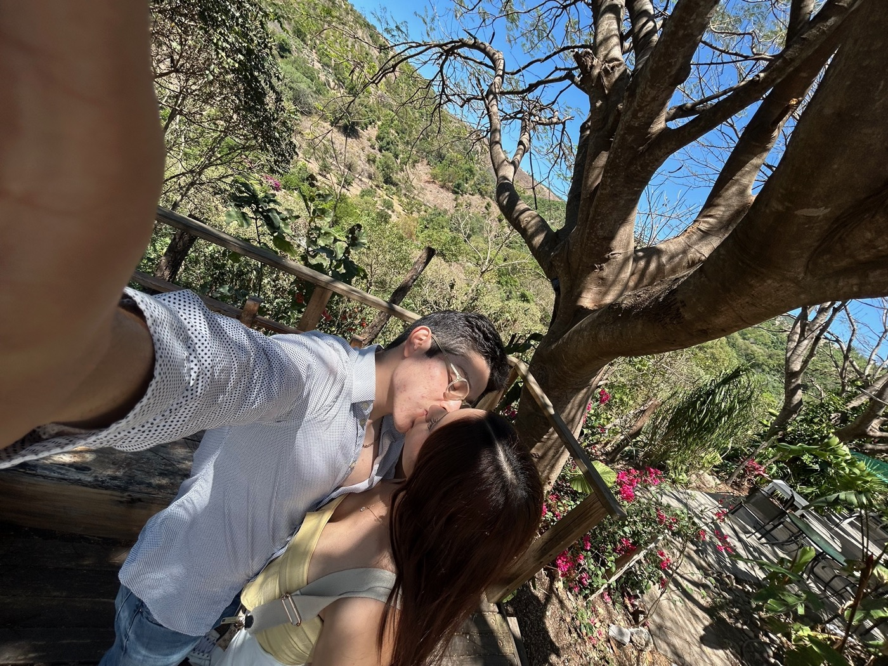
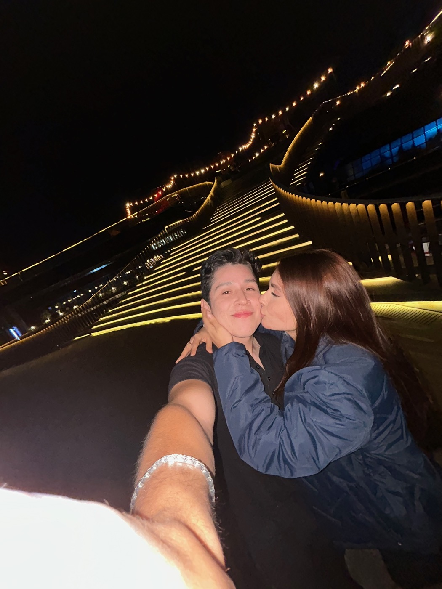
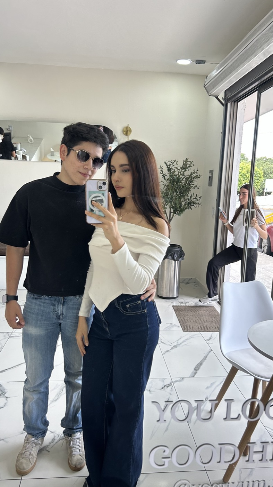

Te debo unas
flores amarillas
Y no las cambio por nada.
Toca para que
florezca
Cada flor es un momento en que pensé:
me encanta esta mujer.
Una carta
sin excusas

Princesa:
Leí lo que me escribiste. Y tienes razón en todo.
No fue "me sale más barato". No fue flojera. Fue que dije "va" y me quedé tranquilo, como si con eso ya estuviera cumplido. Y lo que tú esperabas no era un conjunto ni unas flores: era una seña de que pensé en ti sin que me lo tuvieras que recordar. Te la quedé a deber. Y encima te quedaste callada días para no presionarme. Eso no te tocaba a ti.
Por eso me tardé en contestarte y en llegar a la casa anoche: empecé a hacer esto desde antes del gym y lo terminé llegando. No para que se te pase, sino porque no quiero que te quede ni una duda de si me importas. Me importas más que nada.
El conjunto va. Pero las flores también, y esas te las debo en persona.
— tu Dalí
Ábrelo
Esta vez sin catafixias.
Canjeable por:
- 👗El conjunto de Shein que escogiste, completo. El que cambiamos por las flores… pero esta vez no es cambio: es además
- 💐Un ramo de flores amarillas de verdad, en tu mano, no en una pantalla
- 💛Y yo, todo el fin de semana, sin celular, haciéndote sentir lo amada que eres

Lo que eres
para mí


Amor de mi vida.
Dueña de mi corazón.
Futura madre de mis hijos.
La luz de mi vida.
Mi princesa.
Neta me encantas. Y me vas a tener aquí todos los días, siendo el amor que te mereces.
Las flores van conmigo.